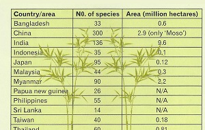

Background
Wood has been used for centuries as a common material in construction of buildings and other structures. Similarly, bamboo has also a long and well established tradition for being used as a construction material throughout the tropical and sub-tropical regions of the world.
In the modern context when forest cover is fast depleting and availability of wood is increasingly becoming scarce, the research and development undertaken in past few decades has established and amply demonstrated that bamboo could be a viable substitute of wood and several other traditional materials for housing and building construction sector and several infrastructure works. Its use through industrial processing has shown a high potential for production of composite materials and components which are cost-effective and can be successfully utilized for structural and non-structural applications in construction of housing and buildings.
Main characteristic features, which make bamboo as a potential building material, are its high tensile strength and very good weight to strength ratio. The strength-weight ratio of bamboo also supports its use as a highly resilient material against forces created by high velocity winds and earthquakes. Above all bamboo is renewable raw material resource from agro-forestry and if properly treated and industrially processed, components made by bamboo can have a reasonable life of 30 to 40 years. The natural durability of bamboo varies according to species and the types of treatments. Varied uses and applications in building construction have established bamboo as an environment-friendly, energy‑efficient and cost-effective construction material. The commonly used species in construction are Bambusa balcooa, Bambusa bambos, Bambusa tulda, Dendrocalamus giganteous, Dendrocalamus hamiltonii, Dendrocalamus asper etc.
Bamboo, a highly versatile resource and widely available, is being used asay engineering material for construction of houses and other buildings. A number of small and medium sized demonstration structures have already been constructed during past few years. These have shown very good performance in different climates. In order to propagate use of bamboo in housing and building construction for wider application, awareness and confidence building amongst professionals and householders is required. This calls for organized actions on prototyping, demonstration, standardization aimed at improving acceptance levels and promoting appropriate construction practices.
World-wide availability of Bamboo
(No. of bamboo species and coverage by country, In Asia)

Over twenty million tones of bamboo are harvested each year,)with almost three fifths of it in India and China. Aq estimated 25 million people all over the world depend on or use bamboo materials. The table above indicates the distribution of bamboo in Asia. It is also serves to highlight the potential dominance of India with its vast resources and reserves of bamboo in future economic activity and trade.
In India, 28% of area and 66% of growing stock of bamboo in NE region and 20% of area and 12% of growing stock in MP & Chattisgarh.
The housing and building construction industry is one of the largest consumers for natural mineral resources and forests. It is increasingly realized that innovative building materials and construction technologies which offer potential for environmental protection, employment generation, economy in construction and energy conservation need to be encouraged as best options to meet the rising demand of housing. Whole of north-east is prone to earthquakes and falls under Seismic Zone V. BMTPC lays emphasis on promoting design and construction of disaster resistant technologies for housing. Construction techniques using bamboo as main material have been found very suitable for earthquake resistant housing. With the constant rise in the cost of traditional building materials and with the poor affordability of large segments of our population the cost of an adequate house is increasingly going beyond the affordable limits of more than 30-35% of our population lying in the lower income segments. This calls for wide spread technology dissemination of cost effective building materials and construction techniques.Bamboo as a Building and Construction Material
Bamboo is structurally stronger than steel. At the same time, it is light-weight, easily workable, and has vibration damping and heat insulation properties. Structurally, bamboo can find application in three main types of structures: scaffolding, housing, and roads.
Scaffolding
Bamboo is being used for scaffolding in most of the countries where it grows. In fact, despite construction becoming high-rise, bamboo has continued to hold advantages over other materials such as steel, which has entered the scaffolding market recently. Steel scaffolding is available as an industrial product of standardized dimensions that make it quick to erect and dismantle. Moreover, steel can be used at least 50 times more than bamboo, which can be used five to ten times at most depending upon the load of the construction. In this respect, bamboo scaffolding needs some technical upgrading.
However, bamboo is a preferred scaffolding material because its flexibility in the variety of lengths that it can be cut into, the lower investments that contractors need to make in the scaffolding stocks (bamboo costs just 6 per cent of the price of steel for similar quantity of scaffolding) and the ease with which it can be set up and dismantled. It is the preferred scaffolding option even in developed countries such as Hong Kong and continues to be used for the majority of high-rise buildings in these countries In India too the usage of bamboo for the purpose of scaffolding is on the higher side. There is virtually no value addition on the raw bamboo used for scaffolding purposes.
Bamboo-a Housing material
In a structural application, bamboo rounds are used to create roof support systems. These systems include a prefabricated triangular truss comprising units eight metres long. A truss can be carried by four people, and deflects only 2.5 cm along its entire length. It is covered with bamboo boards, lath and plaster to create a waterproof roof. This system utilises bamboo rafters with bamboo boards, which are plastered on both sides, and fired clay tiles are used to waterproof.
Floor
Bamboo flooring a n d bamboo board are newly developed interior designing material made using modern scientific methods from superior quality bamboo. Bamboo flooring is an attractive alternative to wood or laminate flooring. Bamboo with a wall thickness of culm of at least 11 mm is suitable for making floorboards. The process of making bamboo strip flooring consists of the following steps:
- Hollow bamboo of a minimum thickness of 11 mm is sliced into strips.
- These strips are milled to a thickness of 7 mm. They are then boiled to remove the starch and treated for anti-moth, anti-mildew, etc.
- The strips are then dried and carbonized (if required).
- The dried strips are now milled to 5 mm thickness.
- These strips are now glued and laminated into solid boards under high pressure, which are then milled into standard strip flooring profiles.
The machinery and equipment required for manufacturing bamboo flooring can be imported from Taiwan, though some is available locally as well. Floors can be made out of flattened bamboo, woven bamboo mats or split bamboo.
As reinforcement
There are four categories in which the use of bamboo has been made:
- Bamboo fibres in cement mortar for roofing sheets
- Split bamboo as reinforcing bars in concrete
- Bamboo as a form
- Bamboo as a soil reinforcement
For Roofing
Bamboo Mat Corrugated Roofing Sheet has been developed by BMTPC in close collaboration with Indian Plywood Research and Training Institute (IPIRTI) Bangalore, India. It is made from woven bamboo mats.
For Walls
Woven bamboo mats are used to make walls in countries such as Bangladesh and India. Vertical whole or halved culms and flattened bamboo strips are also used for making walls. Walls can be made with bamboo as a minor component and mud as a major one.
For Doors and Windows
Bamboo can be fashioned artistically to make doors and windows
BMTPC's Initiatives in Promotion of Bamboo in Housing & Buildings
The Building Materials & Technology Promotion Council (BMTPC) under the Ministry of Housing & Urban Poverty Alleviation, Govt. of India is actively involved in development of bamboo based technologies and to promote these technologies in the North-Eastern Region including other bamboo growing areas, by encouraging commercial production of bamboo based products, construction of demonstration houses and setting up of Bamboo Mat Production Centres for processing of bamboo, etc.
Bamboo Mat Corrugated Roofing Sheets
The BMTPC in collaboration with Indian Plywood Industries Research & Training Institute (IPIRTI), Bangalore, have developed a technology for manufacturing of Bamboo Mat Corrugated Sheet (BMCS) which is durable, strong, waterproof, and decay-insect-fire resistant. The commercial production has been started at Byrnihat, Meghalaya. The product has been accepted by the consumers and is becoming increasing popular as a roofing option in the north east part of the country. It is estimated that in full capacity this unit will generate livelihood for nearly 7000 women/men (through mat weaving) in rural regions where bamboo is abundantly grown.
Bamboo Mat Corrugated Ridge Cap
BMTPC in collaboration with IPIRTI, Bangalore, has also developed a technology for manufacturing of Bamboo Mat Corrugated Ridge Cap for roofing. The Technology is ready for commercialization.
Construction of Demonstration Structures
BMTPC has constructed 24 demonstration structures in Mizoram, Tripura, Nagaland and Meghalaya using bamboo based technologies. These include Houses, OPD buildings, Library buildings, Picnic huts, Schools, etc. The cost of construction using conventional technologies in these areas is around Rs. 800/- per sq ft. This is considerably reduced using bamboo based technologies and the cost of construction achieved is Rs.315 to Rs.622 per sq.ft. for different types of structures. The specifications used are:
- Treated bamboo columns and beams,
- Ferrocement walls on bamboo grid reinforcement.
- Treated bamboo trusses, rafters and purlins,
- Bamboo mat board in wooden frames for door shutters,
- Bamboo Mat Corrugated Roofing Sheets,
- IPS flooring, etc.
Development of Technology for Construction of two storey Bamboo Housing System
A technology for construction of two storey bamboo housing system has been developed and a demonstration house has been constructed at the campus of IPIRTI Bangalore. At each stage of house construction various elements were tested and models of such elements were made before the actual construction was carried out.
Design and Development of Prefabricated Modular Housing System
BMTPC has undertaken Design and Development of prefabricated modular housing system using bamboo and bamboo based composites in collaboration with IPIRTI, Bangloare. A model design of prefab double walled bamboo composite house attached bath and kitchen having size 20' x 24' x 8' was developed. This system will enable application of bamboo composite building materials in prefabricated houses. These types of houses can be constructed quite quickly for immediate and long term rehabilitation for post disaster relief.
Bamboo Mat Production Centres
BMTPC along with Cane & Bamboo Technology Centre (CBTC) in cooperation with State Governments is establishing Bamboo Mat Production Centres in the States of Assam, Tripura, Mizoram, Meghalaya and Kerala. The main objectives of Bamboo Mat Production Centres are to provide uninterrupted supply of bamboo mats to the manufacturing units of bamboo based building components for increasing the productivity, quality, to provide training in mat production process and to create employment opportunities.
The Council has established such Bamboo Mat Production Centres in Tripura, Mizoram, Meghalaya and Kerala.
BMTPC and CBTC are also providing training on bamboo mat production to the artisans from each Bamboo Mat Production Centres. The production capacity of each production centre will be 300 mats per day. It is estimated that the each Centre will be able to produce the mat at the rate of Rs.35 per mat and would be able to sell at the rate of Rs.45 per mat. This provides employment generation of nearly 150 women/men per day i.e. 45,000 women/men days per year per Centre. Besides the above, the Centres can also generate income by supplying bamboo sticks made out of bamboo waste, to the artisans for making handicraft items. The mats produced by Bamboo Mat Production Centres are likely to be utilized by various manufacturers who are producing Bamboo Mat Corrugated Roofing Sheets and Bamboo Mat Boards.
Bamboo - more than an alternative
Bamboo has so far not been regarded as a substitute for wood. An analytical look at the applications for which wood is being used and the usage of bamboo indicates that it is possible to use bamboo for all the applications for which wood is being used. The usage of bamboo has in fact been established conclusively for categories that consume larger volumes of wood, namely, paper pulp, plywood, construction and furniture. There are preconceived notions about the technical capability of bamboo. These have hindered the adoption of bamboo as a wood substitute. The wood industry is not able to visualize bamboo as a process-friendly material that can peel. It also considers bamboo to be susceptible to fire, water and termites.
The Bamboo, if used efficiently, shall lead to the following in the interest of the nation and masses:
- Enterprise Development
- Training for skill up gradation
- Employment generation
- Conservation of forest timber
- Bulk utilization of bamboo
Contributed by:
Dr. Shailesh Kr, Agrawal, Executive Director, Building Materials & Technology Promotion Council, Ministry of Housing & Urban Poverty Alleviation, Government of India
- Log in to post comments
- Email this page